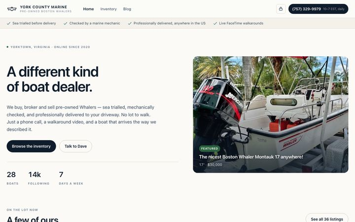
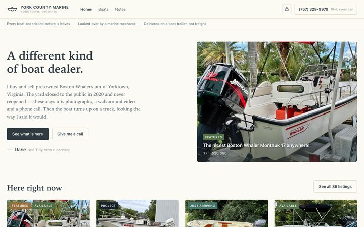
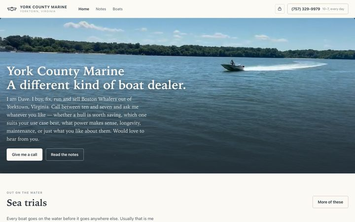
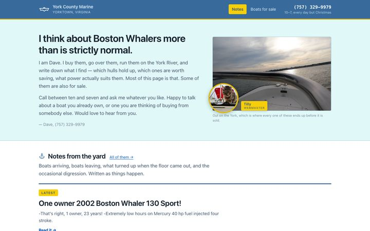
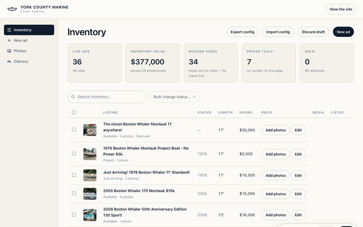
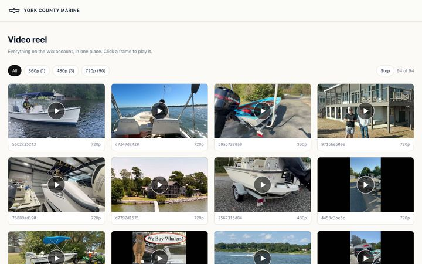
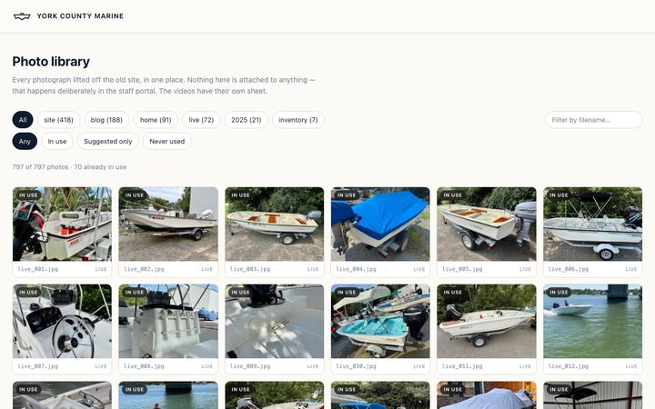

Each one is complete and runs on the same inventory, the same writing and the same photographs — so the differences you see are differences of intent, not of content. They are in the order they were built, and each was a response to something Dave said.
Newest last. All four are live; none of them is switched on for the public.

The first redesign. Image-led, with a filterable inventory — length, price, age — and video that loads nothing at all until you ask for it. The closest of the four to a conventional dealer site.

The same content in a smaller voice, built after Dave said he wanted it to read like a small company rather than a conglomerate. Quieter type, more white space, less apparatus.

Built around Dave rather than the stock. The hero runs a silent loop of six clips of boats going past on the York; Ron is in the shop, Tilly is on a bow rail, and there is a photograph from 1974. Selling is secondary, sharing is first.

A rethink. It takes the one good idea in Craigslist — the listing is the page — and then turns it round, so the writing leads and the boats follow. It says outright that not everything is on the list. The old site's blue and yellow, no webfonts at all, and a set of original spot drawings.
They all share one set of data. Thirty-six listings and forty-three posts, with titles and copy taken verbatim off the live site. No photograph is attached to anything by guesswork — everything is linked by hand in the staff portal, after two rounds of automatic matching put the wrong boats and Dave's own house on the wrong pages.
Not designs — working pages used to build and check the others.

Where photographs are attached to listings and posts, and where a suggested photo is offered for review rather than applied. Saves to a config file the public pages read.

All 94 videos in one contact sheet. Click a frame to play it; only one runs at a time.

All 797 photographs, filterable by where they came from and whether they are in use on the site yet.